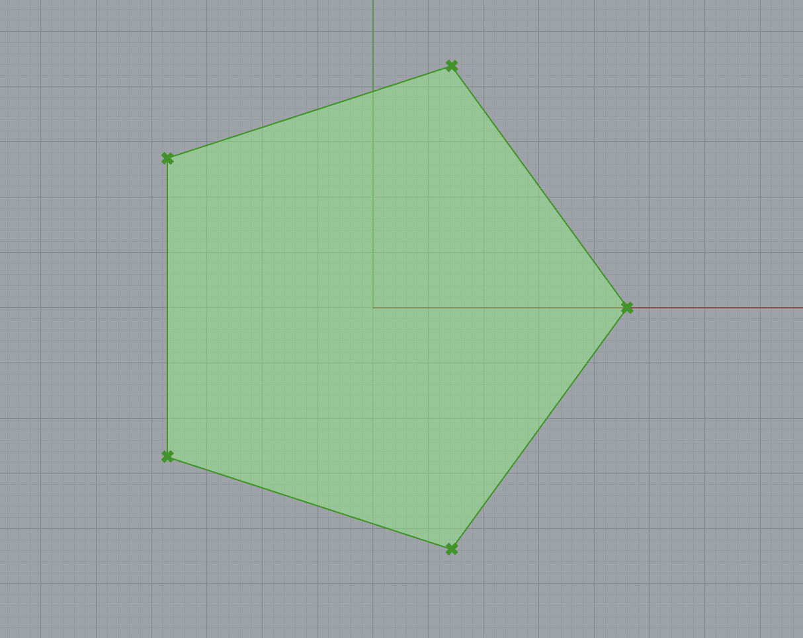
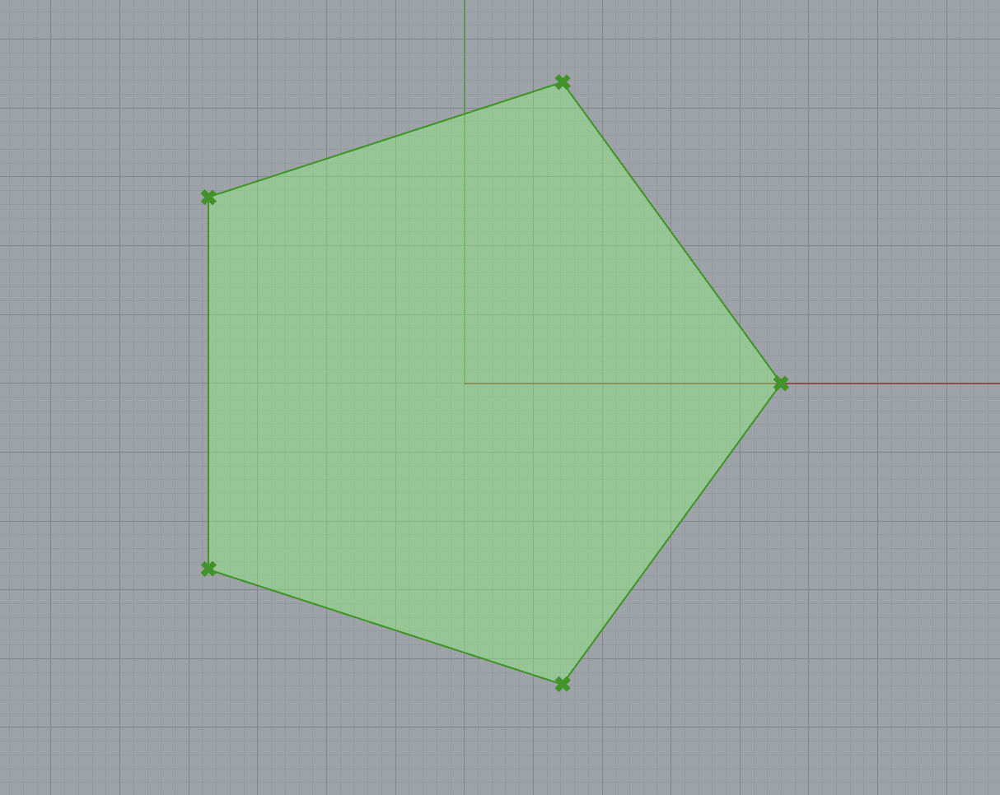
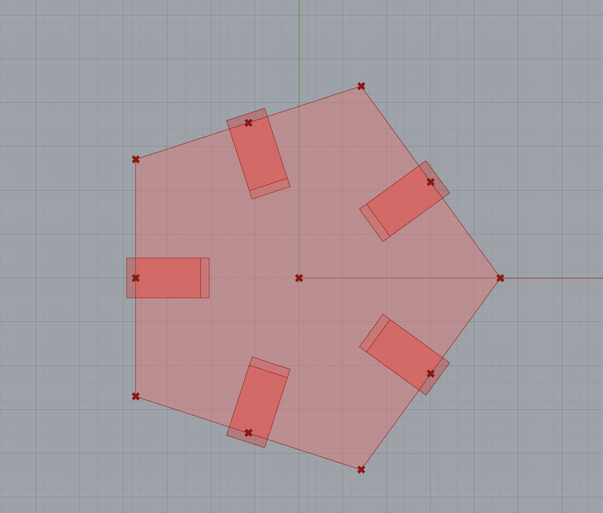
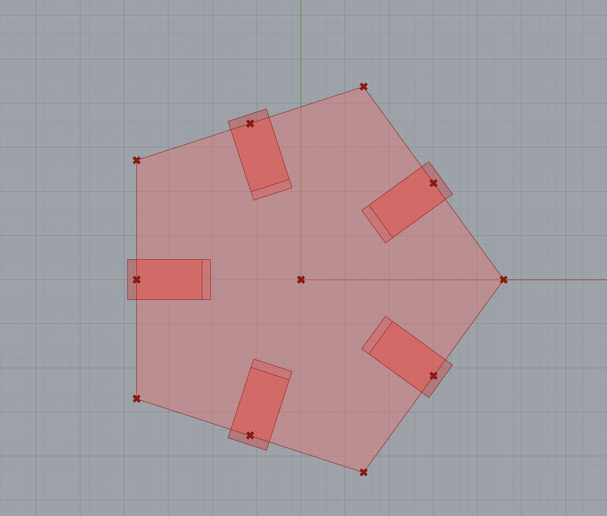
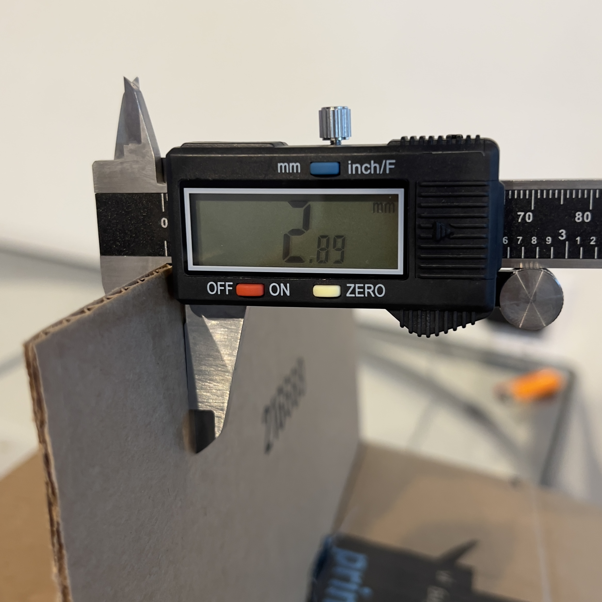
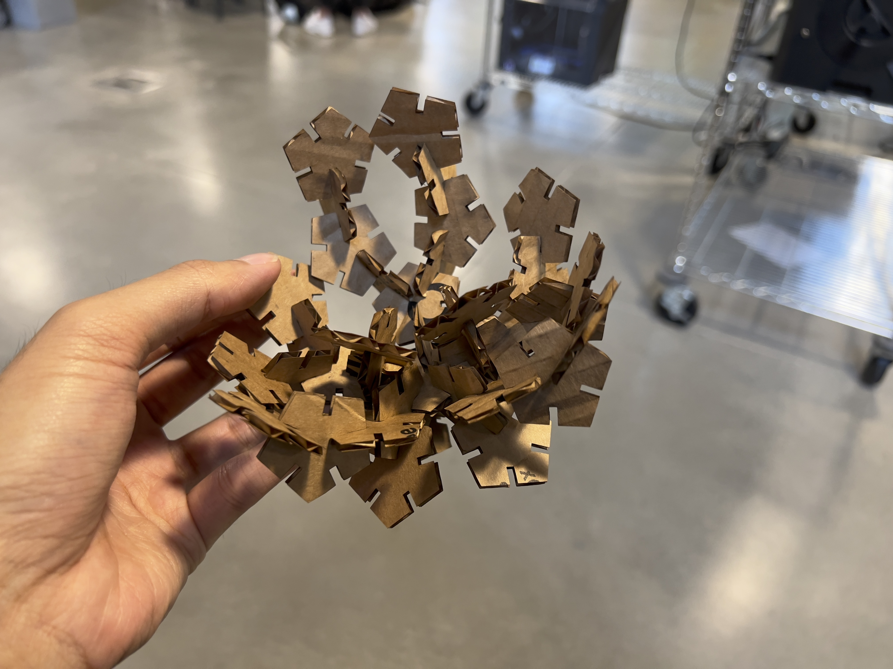
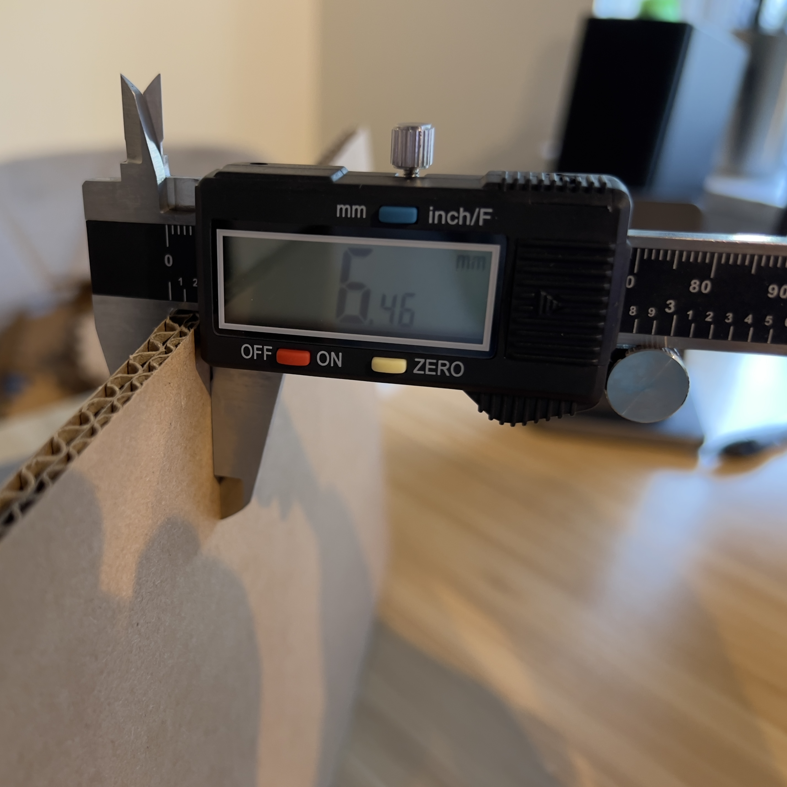
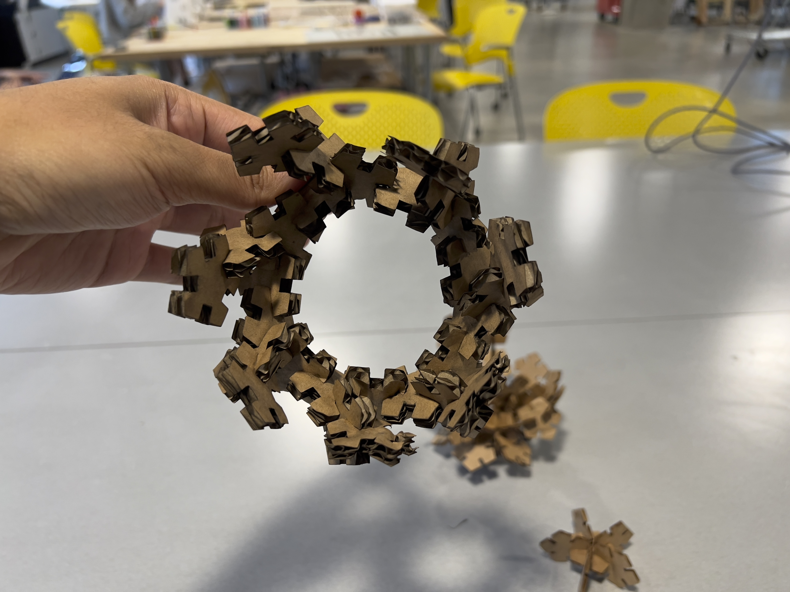
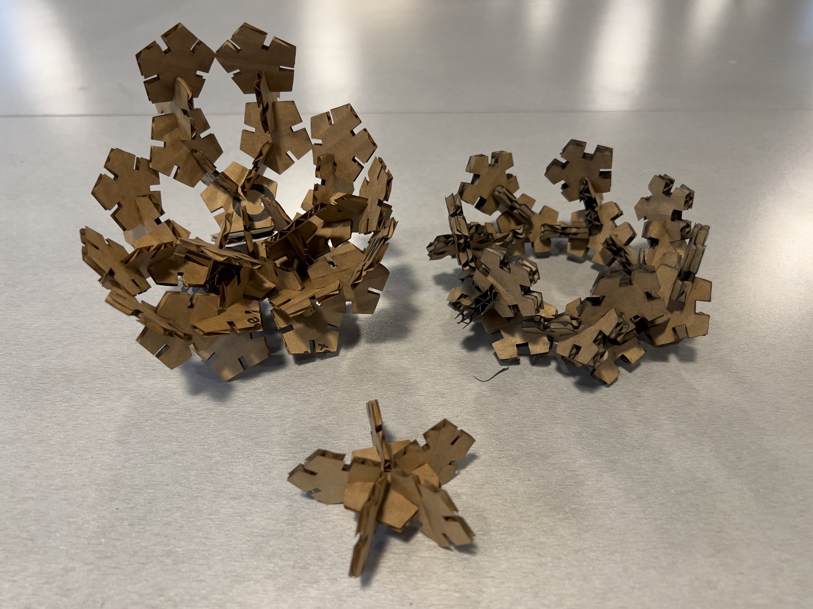

← Back to Clark's Digital Fabrication Portfolio
A2: Parametric modeling with Grasshopper
Last updated: Tues, Oct 18, 2022
For this assignment, I wanted to do more traditional press fitting as compared to my A1.
I created a definition of a paremetric model for pieces that allow for different cardboard depths to be inputted.
---
I. Creating parametric models in Grasshopper
When creating my shapes, I used the polygon command with inputs that determined its
center point, radius size (mm), and number of sides. For my cutouts, I went with
pentagons with radii around 23mm.
 

Next, I created rectangle extrusions using vectors from center of the polygon to the
midpoint of each edge. Using the cardboardThickness (mm) number slider, the depth of the
cardboard can be inputted to dynamically change the extrusion size.
 

I trimmed the inner rectangles from the outer polygon and joined the curves, then baked it
into Rhino. For this instance of the joined curve, the cardboard depth is 4.569.


Just to model how the constructed pieces might fit together, I extruded the curves in Rhino
and connected multiple instances of the piece.
---
II. Laser cutting and construction
I gathered two sets of cardboard with different depths: a thinner type (2.89 mm) and a thicker type (6.46 mm).
I wanted to test out two different depths to test my parametric model's input slider, as well as to experiment more
with different laser cutter settings.
Thinner laser cut:
Depth: 2.89 mm
Speed: 25%
Power: 40%
Frequency: 50%




Thicker laser cut:
Depth: 6.46 mm
Speed: 15%
Power: 75%
Frequency: 50%





---
Here are my files:
-
Grasshopper & Rhino:
A2 Parametric.gh
A2 Parametric.3dm -
Illustrator:
A2 Thin.ai
A2 Thick.ai
Acknowledgments:
- Junchao for his very helpful Grasshopper tutorial.
← Back to Clark's Digital Fabrication Portfolio